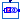
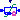

FACTS models from PSAT
Extends from Modelica.Icons.Package (Icon for standard packages).
| Name | Description |
|---|---|
|  STATCOM | Static Var Compensator |
|  TCSC | Thyristor Controlled Series Compensator |
Static Var Compensator
The following documentation is adapted from [Milano2010], chapter 20.3:
The implemented STATCOM model is a current injection model [...]. The STATCOM current is always kept in quadrature in relation to the bus voltage so that only reactive power is exchanged between the ac system and the STATCOM.
Extends from OpenIPSL.Electrical.Essentials.pfComponent (Partial model containing all the parameters for entering power flow data).
| Name | Description |
|---|---|
| Power flow data | |
| S_b | System base power [VA] |
| V_b | Base voltage of the bus [V] |
| fn | System frequency [Hz] |
| P_0 | Initial active power [W] |
| Q_0 | Initial reactive power [var] |
| v_0 | Initial voltage magnitude [1] |
| angle_0 | Initial voltage angle [rad] |
| displayPF | Display power flow: |
| Device parameters | |
| Sn | Power rating [VA] |
| Vn | Voltage rating [V] |
| Kr | Regulator gain [pu/pu] |
| Tr | Regulator time constant [s] |
| i_Max | Maximum current (device base) [1] |
| i_Min | Minimum current (device base) [1] |
| Parameter mask | |
| enableS_b | Enable S_b in parameter list |
| enableV_b | Enable V_b in parameter list |
| enablefn | Enable fn in parameter list |
| enableP_0 | Enable P_0 in parameter list |
| enableQ_0 | Enable Q_0 in parameter list |
| enablev_0 | Enable v_0 in parameter list |
| enableangle_0 | Enable angle_0 in parameter list |
| enabledisplayPF | Enable displayPF in parameter list |
| Name | Description |
|---|---|
| p | |
| v_POD |
Thyristor Controlled Series Compensator
A TCSC Regulator according to [Milano2010], chapter 20.2.
Extends from Essentials.pfComponent (Partial model containing all the parameters for entering power flow data).
| Name | Description |
|---|---|
| Power flow data | |
| S_b | System base power [VA] |
| V_b | Base voltage of the bus [V] |
| fn | System frequency [Hz] |
| P_0 | Initial active power [W] |
| Q_0 | Initial reactive power [var] |
| v_0 | Initial voltage magnitude [1] |
| angle_0 | Initial voltage angle [rad] |
| displayPF | Display power flow: |
| pref | Reference power [1] |
| Device parameters | |
| Sn | Power rating [VA] |
| Vn | Voltage rating [V] |
| ctrl | Type of control of the TCSC |
| alpha_min | Minimum firing angle [rad] |
| alpha_max | Maximum firing angle [rad] |
| xTCSC_min | Minimum reactance [1] |
| xTCSC_max | Maximum reactance [1] |
| Tr | Regulator time constant [s] |
| Kp | Proportional gain of PI controller [pu/pu] |
| Ki | Integral gain of PI controller [pu/pu] |
| Kr | Gain of stabilizing signal [pu/pu] |
| x_L | Reactance (inductive) [1] |
| x_C | Reactance (capacitive) [1] |
| XL | Line reactance [1] |
| G | Shunt half conductance [1] |
| B | Shunt half susceptance [1] |
| Initialization | |
| alpha0 | Initial firing angle [rad] |
| xTCSC0 | Initial reactance [1] |
| Parameter mask | |
| enableS_b | Enable S_b in parameter list |
| enableV_b | Enable V_b in parameter list |
| enablefn | Enable fn in parameter list |
| enableP_0 | Enable P_0 in parameter list |
| enableQ_0 | Enable Q_0 in parameter list |
| enablev_0 | Enable v_0 in parameter list |
| enableangle_0 | Enable angle_0 in parameter list |
| enabledisplayPF | Enable displayPF in parameter list |
| Name | Description |
|---|---|
| p | |
| n | |
| Vs_pod |